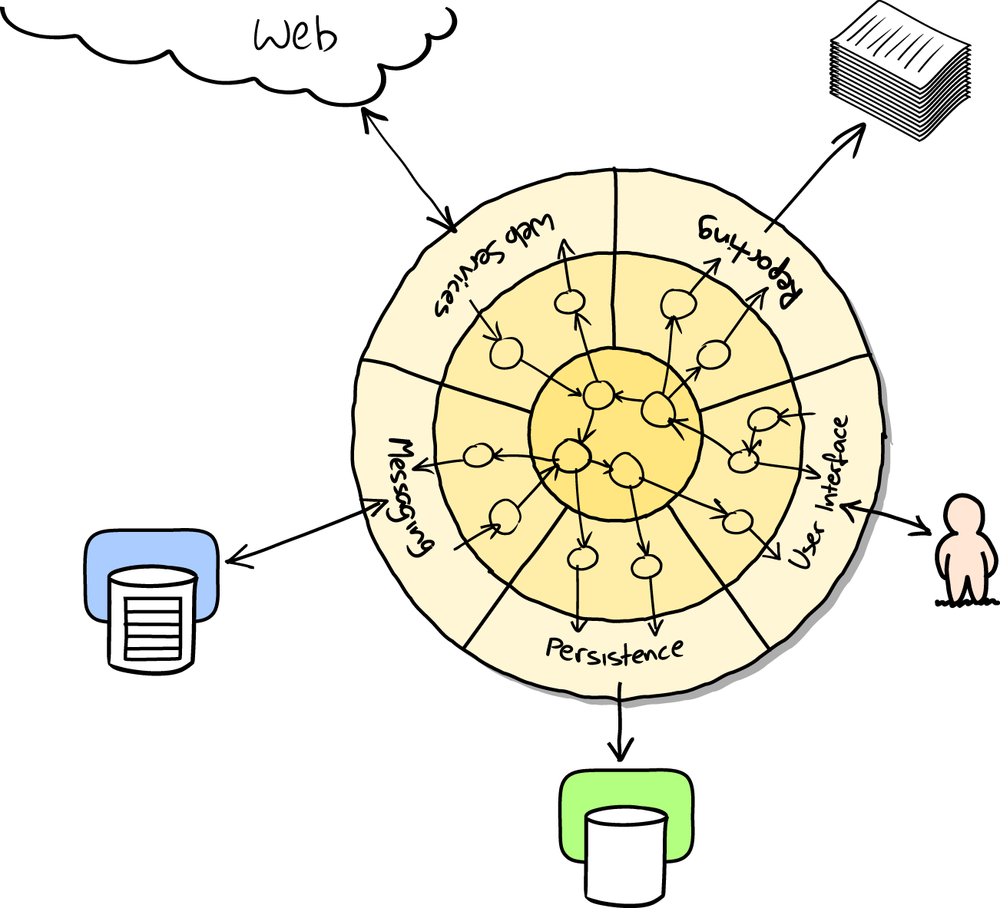

A few days ago I tweeted a C# code snippet, showing a FizzBuzz implementation using some of the new features in C# 8.0. The tweet "went viral", as the kids say, with several people admiring the terse and functional aspect of it, while others asked me why I wasn't writing it in F# in the first place?
First time writing C# in 4 years :P pic.twitter.com/m7kM9j9skN
— Igal Tabachnik (@hmemcpy) March 4, 2020
It has been over 4 years since I last wrote C#, and being exposed to functional programming clearly affected how I write code today. The snippet I wrote seems very neat and natural, however, some people expressed concerns that it doesn't feel like C# code --- "It looks too functional."
You keep using that word...
Depending on who you ask, the word functional means different things to different people. But rather than debating semantics, I'd like to offer an explanation of why this tiny FizzBuzz snippet feels functional.
But first, let's unpack the snippet (with a few tweaks to the above image):
public static void Main(string[] args)
{
string FizzBuzz(int x) => // Local function, defined as an expression-bodied method
(x % 3 == 0, x % 5 == 0) switch { // Tuple definition
(true, true) => "FizzBuzz", // Pattern-matching on the tuple values
(true, _) => "Fizz", // Discard (_) is used to omit
(_, true) => "Buzz", // the values we don't care about
_ => x.ToString()
};
Enumerable.Range(1, 100) // Make a range of numbers from 1 to 100
.Select(FizzBuzz).ToList() // Map each number to a corresponding FizzBuzz value
.ForEach(Console.WriteLine); // Print the result to the console
}The novelty here lies in using a tuple (pair) to capture the result of both equations together (x % 3 == 0 and x % 5 == 0). This allows using pattern matching to deconstruct the tuple and examine both values together. If none of the cases match, a default (_) case will always match, returning the string value of the number.
However, none of the many "functional" features used in the snippet (including LINQ-style foreach loops) are what makes this approach in itself functional. What makes it functional is the fact that except for the final printing to the console, all of the methods used in this program are expressions.
Expression-oriented programming
Simply put, an expression is a question that always has an answer. In programming terms, an expression is a combination of constants, variables, operators, and functions, evaluated by the runtime to compute ("return") a value. To illustrate the difference with statements, let's write a more common C# solution to FizzBuzz:
public static void Main(string[] args)
{
foreach (int x in Enumerable.Range(1, 100)) {
FizzBuzz(x);
}
}
public static void FizzBuzz(int x)
{
if (x % 3 == 0 && x % 5 == 0)
Console.WriteLine("FizzBuzz");
else if (x % 3 == 0)
Console.WriteLine("Fizz");
else if (x % 5 == 0)
Console.WriteLine("Buzz");
else
Console.WriteLine(x);
}Obviously, this snippet could be tweaked to remove duplication, but I doubt anyone would argue this does not look like C#. And yet, upon closer inspection of the FizzBuzz method, it reveals several design issues (even in a program as simple as FizzBuzz).
First of all, this program violates the Single Responsibility principle. It mixes both "business logic" of calculating the output value based on the number with the act of printing this value to the console. As a consequence, it violates the Dependency Inversion principle by tightly-coupling to the console output. Finally, we cannot reuse and test this program in isolation without introducing a few indirections. For such a trivial program like FizzBuzz we would never do this, but taken to the extreme, it's easy to end up with Enterprise FizzBuzz.
All of the problems stated above can be solved by separating the act of producing a FizzBuzz value and printing it to the console. Even without using fancy language features, the simplest act of returning a value to the caller frees us from the responsibility of doing something with that value:
public static string FizzBuzz(int x)
{
if (x % 3 == 0 && x % 5 == 0)
return "FizzBuzz";
else if (x % 3 == 0)
return "Fizz";
else if (x % 5 == 0)
return "Buzz";
else
return x.ToString();
}This might not look like a dramatic change (and it could be implemented in various ways, here using the most naive way for illustration), but few things happened here:
- The
FizzBuzzmethod is now an expression, given some numeric input produces a string output - It has no other responsibilities or side-effects, making it a pure function
- It can be tested and reused on its own, without any additional dependencies or setup
- The caller of this function is free to do whatever it wants with the result -- not our responsibility
And here lies the essence of functional programming - all functional code is made up of expressions, producing some value and returning it to their callers. These expressions are usually stand-alone, completely specified by their input parameters. At the very top, the entry point (or, sometimes known as "the end of the world") these values are gathered and interacted upon with the rest of the world. In object-oriented jargon, this is sometimes called the "Onion architecture" (or "Ports and Adapters") - a pure core consisting of business logic and the imperative outer shell that is responsible for interactions with the external world.
C# (and Java and Python and ...) can be functional
Using expressions instead of statements in the small is at the core of nearly all programming languages today. C# evolved over time to introduce features to make it easier to work with expressions: LINQ, expression-bodied methods, pattern matching and more. These features are oftentimes called "functional" because they are --- in languages such as F# these features are used all the time, allowing the data to flow from the inside-out. Other functional languages, such as Haskell, make it nearly impossible to have anything other than expressions.
In fact, this style of programming is now encouraged by the C# team. In a recent talk given at NDC London, Bill Wagner urges you to change your (imperative) habits and embrace modern techniques:
C# (and other imperative languages, like Java) can be used functionally, but it requires a high level of diligence. These languages make the functional style the exception, not the norm. I urge you to explore other languages, where expression-oriented programming is the default, making it a first-class citizen.